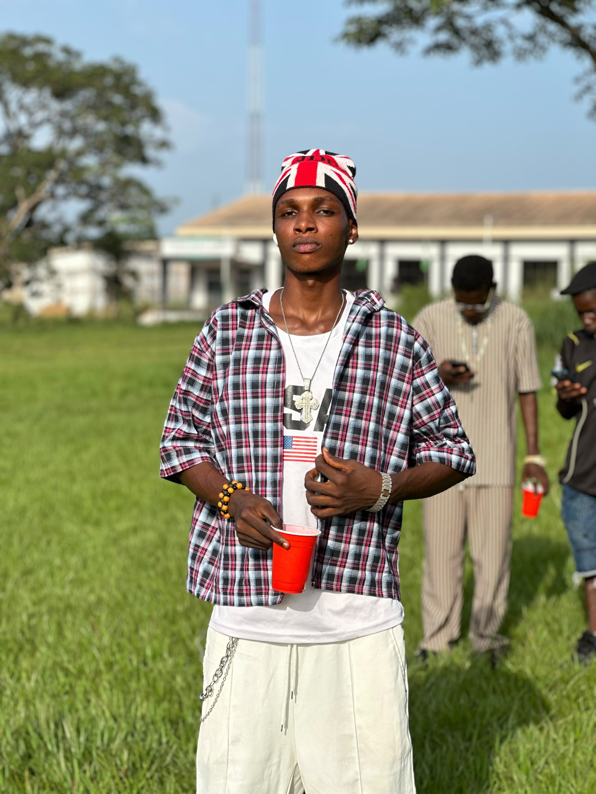

A PERSONAL STORY
Eze Kenechukwu Kennedy
Known as Kenny · Nigerian entrepreneur · CEO and Founder of KENNIX · Actor and content creator
Born on February 28
The little boy called Eze
Every person has a story behind the name people know. Before he became Kenny, before the business ideas and the dreams of building something of his own, he was simply Eze — a young boy growing up with hopes that were bigger than the circumstances around him.
His journey has not been a straight line. It has included difficult choices, hard work, disappointments and moments when he had to find a way forward without having everything he needed.
Two textbooks and a thousand questions
When he began secondary school, he says he was given only two textbooks. He asked for more, but the books he needed did not come. For a student who wanted to learn and keep up with schoolwork, that was not a small problem. It became one of the first challenges that pushed him to look for ways to provide for himself.
He began taking on small jobs. He collected scrap iron from the streets, carried it over long distances and sold it. Sometimes he received only ₦50 or ₦100. He often felt that the buyers were taking advantage of him, but he needed the money and had little power to negotiate.
He also went to markets and offered to help traders and customers carry or move their goods. He was paid for each task. After finishing, he sometimes asked for discarded cartons, gathered them and sold them too. These were not glamorous jobs. They were simply the options he could find.
The boy who kept working
From JSS3, the work became physically harder. He did masonry labour: mixing cement and stones, carrying pans and moving blocks. He says he earned ₦20 for each block he carried. The money went towards clothes, books and other things he needed.
At times, the pressure of earning money affected his schooling. Between JSS1 and JSS2, he sometimes diverted from his usual route to go to the market for work. There were days he missed classes or left school after pretending to be unwell. These were difficult decisions made by a young student trying to meet needs that felt bigger than him.
There was also a girl who helped him with his school notes. When he could not keep up, she helped copy and complete them. He has not forgotten that kindness. He hopes one day to find her and thank her properly, perhaps even surprise her, because her help mattered to him.
The nights nobody saw
His academic performance changed. A student who had once occupied the top position began placing 22nd, 25th and 19th. His mother noticed the decline. Behind those positions were pressures that could not be measured by a school report: the time spent working, the books he lacked and the responsibilities he was trying to carry.
He has spoken about the pain of not having clothes and shoes provided for him from JSS1, and about hearing complaints over school fees, clothes and other expenses. Those experiences left him with questions and hurt that he did not always know how to express.
Some nights, he stayed awake thinking. Sometimes he cried privately. Much of what he was going through was invisible to the people around him. The phone he uses today, like many of the things he has owned, came through money he earned himself.
Sky P: finding a place to belong
%20(1).jpg)
At St Michael's Boys' Secondary School, Ozubulu, he became known as Sky P. The nickname travelled around the school, and even younger students and the principal knew him by it.
Football became an important part of his school life. He played as a goalkeeper and captained the school team, representing the school in competitions. He remembers the pride of helping his team achieve success and being recognised for his goalkeeping.
He also tried to help people around him. He says he contributed towards the WAEC fees of several classmates. In SS2, he began taking freelance jobs online. Because he was under 18, some accounts were created using his mother's credentials. He used the income to support himself and, when he could, help others.
Alongside the work, he spent time learning independently. He explored online courses and tutorials in forex trading, photo and video editing, website development with JavaScript, app development and Python. These were learning experiences that expanded his curiosity about technology and what he might be able to build.
Choosing a different stage
At one point, he considered becoming a Catholic priest. Over time, his interests led him towards entertainment, performance and storytelling. He chose to study Theatre and Film Studies at the University of Nigeria, Nsukka (UNN), where he is now a 200-level student.
University brought another chapter in football. He began as the first-choice goalkeeper for the TFS 029 set. During the second semester, he moved to the wing. In his second year, he returned to the role of first-choice goalkeeper. The changes reflect a willingness to take on different responsibilities and keep participating.
From an idea to KENNIX
For a long time, he wanted to build something of his own. He did not begin with a perfect business plan or a complete picture of what the future would look like. He had a desire for financial independence, experience from taking freelance jobs and an interest in digital skills. He wanted to create something he could call his own.
He credits God with inspiring the idea that became KENNIX. What began as an online retail concept grew into a broader vision: a Nigerian shopping brand bringing fashion, shoes, bags and accessories together with phones, technology, electronics and everyday essentials.
As CEO and Founder, Kenny is working to develop the brand, build supplier relationships, widen its product range and create a convenient shopping experience for customers. KENNIX carries the tagline: “Your World. Your Style. Your Choice.”
The creative journey is still unfolding
Beyond business, Kenny is pursuing his interest in acting and content creation. He has taken part in an upcoming production titled Shadows of Secrets, in which he played the head of a gangster group. The production has not yet been released. For him, it is one step in a creative journey that he hopes to continue developing.
A story still being written
Kenny's story is not a claim that every struggle has been overcome or that every dream has already come true. It is the story of someone who has had to work for many of the things he needed, who learned through experience, who made mistakes, who kept exploring new interests and who is still trying to build a future.
From collecting scrap iron and carrying blocks to learning digital skills, playing football, studying Theatre and Film Studies and starting KENNIX, the path has been shaped by persistence and the hope that life can become bigger than the circumstances in which it began.
The boy who once walked long distances to sell scrap is still walking — only now, he is carrying a vision of what he hopes to build.